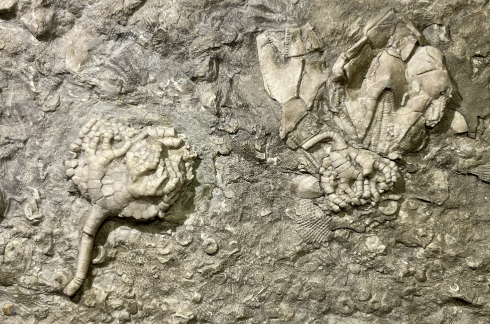
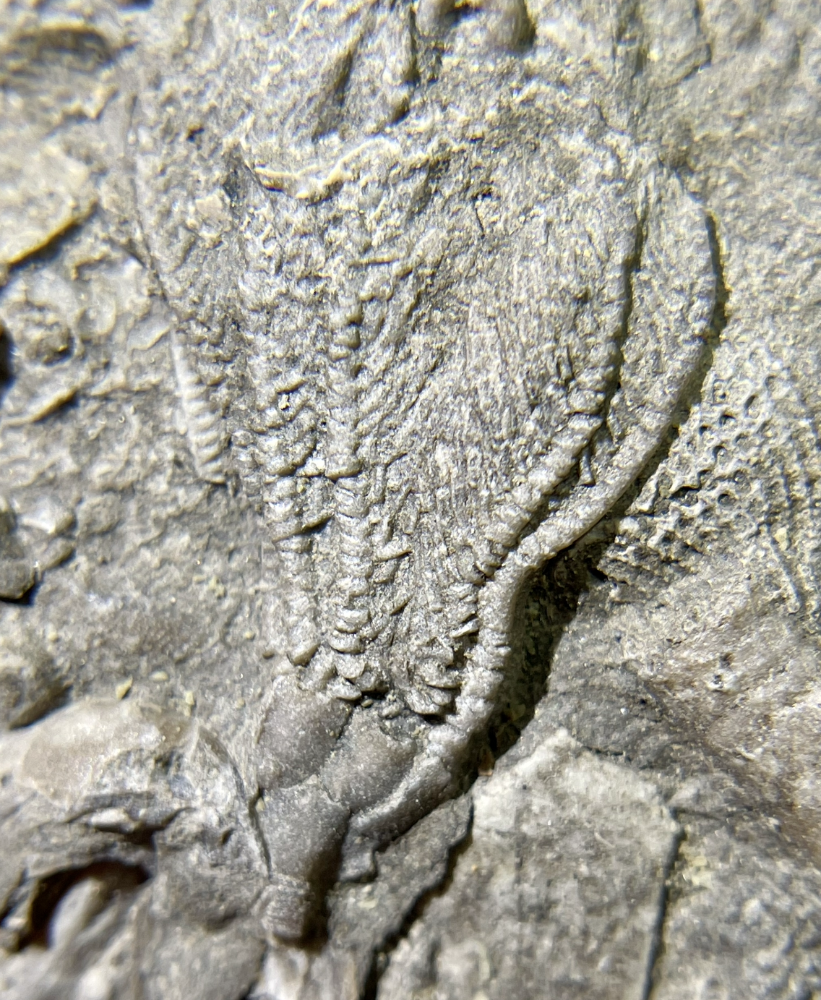
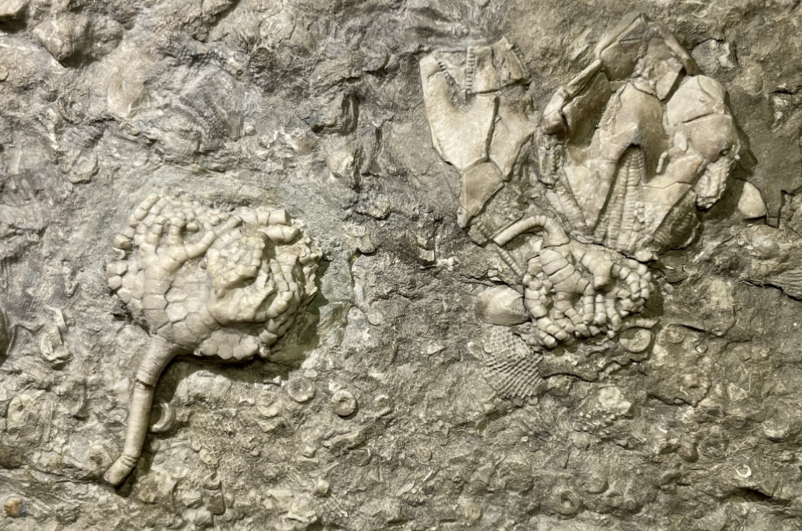
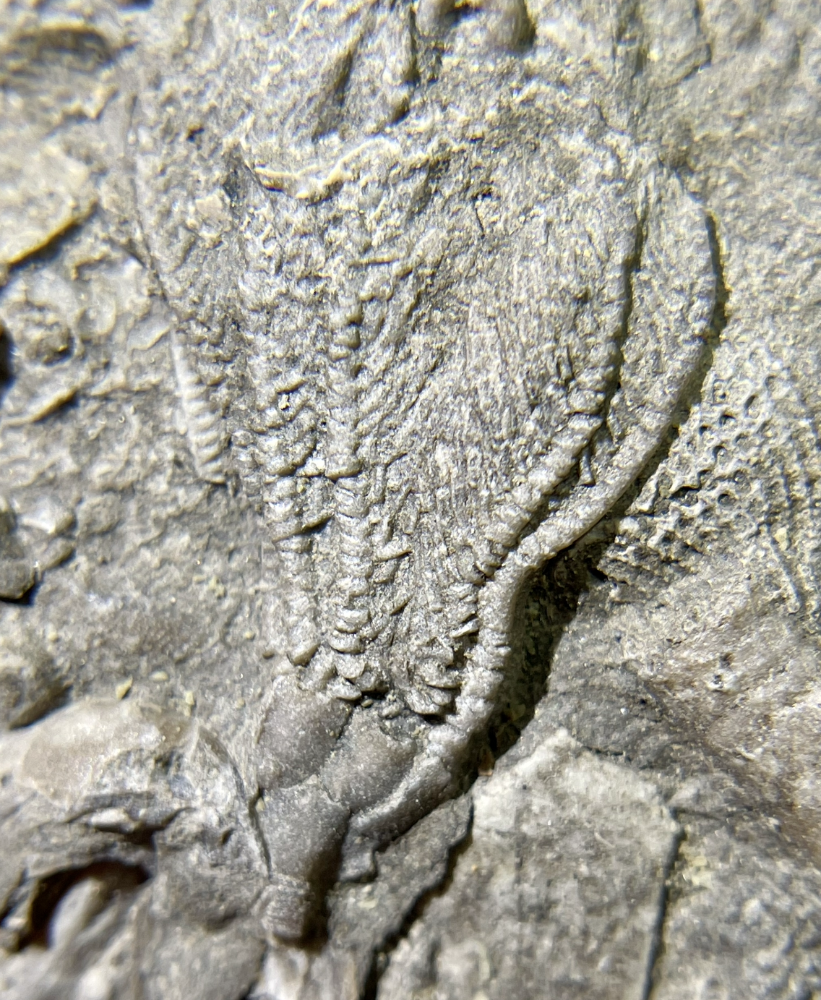

Edrioasteroid
1. indet.
2. Taxocrinus whitfieldi
3. Pterotocrinus rugosus
4. Phacelocrinus sp.
5. Dichocrinus sp.
6. Pentremites sp.
• Mississippian
• Indian Springs Shale, Big Clifty Formation
• Sulphur, Crawford County, Indiana, USA
Size: 18.5 cm x 15 cm
 
